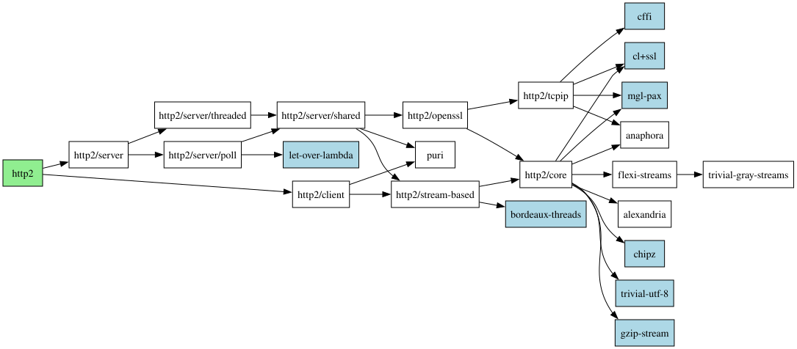
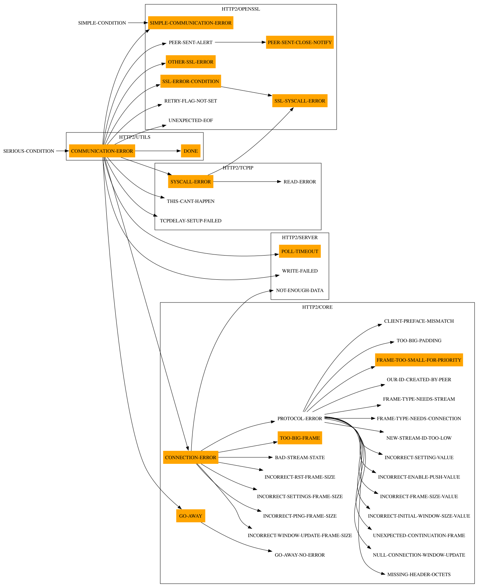
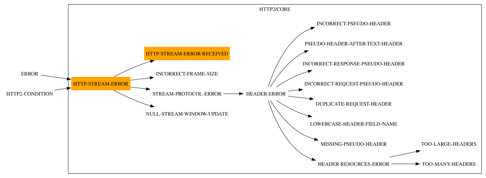

3 Reference documentation
This is part of the HTTP/2 documentation that provides reference documentation. See also Overview and Tutorials.
3.1 Systems and packages
The library is split to several subsystems. Most of them depend on other quicklisp-loadable components, see the graph.

-
Version: 2.1
Description: HTTP/2 library, including a sample client and server.
The system also supports TEST-OP to run the test suite.
Depends on: http2/client, http2/server, http2/server/poll
-
- Description: HTTP/2 server interface. Provides access to an implementation of a HTTP/2 server
- both for running the server and for defining content.
- Author: Tomáš Zellerin mailto:tomas@zellerin.cz
- Depends on: http2/server/poll, http2/server/threaded
- Description: HTTP/2 server interface. Provides access to an implementation of a HTTP/2 server
-
- Description: An example of http/2 client
- Licence: MIT
- Author: Tomáš Zellerin mailto:tomas@zellerin.cz
- Depends on: cl+ssl, http2/stream-based, puri
-
- Description: Demo content for the HTTP/2 server.
- Author: Tomáš Zellerin mailto:tomas@zellerin.cz
- Depends on: cl-who, http2/server, let-over-lambda, parenscript
[package] "HTTP2/SERVER" NICKNAMES ("HTTP2/SERVER/SHARED" "HTTP2/SERVER/POLL" "HTTP2/SERVER/THREADED")
Contains
Functions to start and stop of a HTTP/2 servers,
implementations of the servers (threaded and polled version),
HTTP2server connections andHTTP2streams,macros to define content for the served pages.
-
HTTP/2 client functions, in particular,
RETRIEVE-URL.
3.2 HTTP/2 client API
[in package HTTP2/CLIENT]
There is a simple client in the package http2/client.
[function] RETRIEVE-URL URL &REST PARS &KEY METHOD CONTENT CONTENT-FN ADDITIONAL-HEADERS CONTENT-TYPE CHARSET GZIP-CONTENT &ALLOW-OTHER-KEYS
Retrieve resource on
URL(a string) through HTTP/2 over TLS.See
FETCH-RESOURCEfor documentation of the keyword parameters.Example:
(http2/client:retrieve-url "https://example.com") ==> "<!doctype html> ... <html> ... <head> ... <title>Example Domain</title> ... ... <meta charset="utf-8" /> ... <meta http-equiv="Content-type" content="text/html; charset=utf-8" /> ... <meta name="viewport" conten...[sly-elided string of length 1256]" ==> 200 (8 bits, #xC8, #o310, #b11001000) ==> (("content-length" . "1256") ("x-cache" . "HIT") ("vary" . "Accept-Encoding") ... ("server" . "ECS (bsb/27E0)") ... ("last-modified" . "Thu, 17 Oct 2019 07:18:26 GMT") ... ("expires" . "Thu, 28 Sep 2023 19:38:44 GMT") ... ("etag" . "\"3147526947+ident\"") ("date" . "Thu, 21 Sep 2023 19:38:44 GMT") ... ("content-type" . "text/html; charset=UTF-8") ... ("cache-control" . "max-age=604800") ("age" . "151654")) ==> "/" ==> #<VANILLA-CLIENT-CONNECTION > ==> NIL ==> "HTTP2 does not provide reason phrases"The individual values are:
body of the reply (response data) - string or array
status code as integer
alist of response headers
the
URLthe reply came from (bogus value for Drakma compatibility)the connection the reply comes from (not network stream as in Drakma, but same purpose - can be reused for ruther queries.)
whether connection is closed (passed as parameter)
reason phrase (bogus value)
[generic-function] FETCH-RESOURCE MEDIUM URL PARS
Retrieve
URLover some medium - HTTP/2 connection, network socket, .....The
ARGSis a property list used by some methods and ignored/passed down by others.The first argument,
MEDIUM, is where to fetch from. It can beA HTTP/2 connection to use,
a CL stream (HTTP/2 connection would be build atop it),
keyword
:CONNECTto open network connection base on the second argument.
The second argument,
URL, is what to fetch. It can be:an
URLstring,a PURI object,
a request object (instance of some subclass of 'generic-request)
The final argument,
PARSis used for transformations:It is used for
MAKE-INSTANCEcall to create request object,it determines type of the request object - either from
:REQUEST-CLASSparameter or based on:CONTENTvalue,when new connection is created on a stream,
:CLOSEparameter determines if it would be closed. Set it toNILto keep it
[function] REQUEST-HEADERS METHOD PATH AUTHORITY &KEY (SCHEME "https") CONTENT-TYPE GZIP-CONTENT ADDITIONAL-HEADERS
Make list of request headers. The obligatory headers are passed as the positional arguments.
ADDITIONAL-HEADERSare a list of conses, each containing header name and value.
[function] DRAKMA-STYLE-STREAM-VALUES RAW-STREAM &KEY CLOSE-STREAM
Return values as from
DRAKMA:HTTP-REQUEST. Some of the values are meaningless, but kept for compatibility purposes:Result content (text or octet string, depending on content type),
return code,
headers alist,
simulated target
URL(always "/"),used connection (can be reused),
simulated reason phrase (constant string)
3.3 Server API reference
[in package HTTP2/SERVER with nicknames HTTP2/SERVER/SHARED, HTTP2/SERVER/POLL, HTTP2/SERVER/THREADED]
3.3.1 Server classes
The server behaviour is defined by used dispatcher (server class). The class is
specified as a parameter to the START function.
The dispatcher should be a subclass of the BASE-DISPATCHER and can use predefined mixins to specify:
How to handle multiple connections (
THREADED-DISPATCHER,POLL-DISPATCHER-MIXIN,SINGLE-CLIENT-DISPATCHER)For threaded dispatcher to add
TLSwrapping (TLS-DISPATCHER-MIXIN)To run the server in separate thread (
DETACHED-SERVER-MIXIN).
Some predefined combinations are below.
[class] DETACHED-POLL-DISPATCHER DETACHED-SERVER-MIXIN POLL-DISPATCHER
Detached version of the
POLL-DISPATCHER.
[variable] *VANILLA-SERVER-DISPATCHER* NIL
Default value of the server dispatcher. One of
DETACHED-TLS-THREADED-DISPATCHERotPOLL-DISPATCHER
Server mixins and component classes
[class] THREADED-DISPATCHER BASE-DISPATCHER
Specialize
DO-NEW-CONNECTIONto process new connections each in a separate thread.
[class] POLL-DISPATCHER-MIXIN FDSET-MANAGER
Uses poll to listen to a set of clients and handle arriving packets in a single thread.
Maximum number of clients is fixed (by default fdset-size, by default 10). Additional clients wait until one of existing client leaves.
Timeouts can be specified for polling.
[class] SINGLE-CLIENT-DISPATCHER BASE-DISPATCHER
Handle the connection while doing nothing else.
Serve just one client at time: when it connects, read the incoming requests and handle them as they arrive. When the client sends go-away frame, close the connection and be ready to serve another client.
Obviously, there is little overhead and this version is actually pretty fast - for one client and in ideal conditions (especially with request pilelining).
[class] TLS-DISPATCHER-MIXIN EASY-CERTIFICATED-CONTEXT-MIXIN H2-SERVER-CONTEXT-MIXIN BASE-DISPATCHER
Specializes
SERVER-SOCKET-STREAMto addTLSlayer to the created sockets, andSTART-SERVER-ON-SOCKETto use a context created by MAKE-HTTP2-TLS-CONTEXT.
-
Defined two sets of handlers, exact and prefix, for the dispatcher. Appropriate handler is run to process the request when peer closes the http2 stream. The exact handler must match fully the path (so not the query), prefix handlers matches when the path starts with the prefix.
Protocol and domain are not checked. The behaviour is implemented in the appropriate
PEER-ENDS-HTTP-STREAMmethod.
3.3.2 Define handler
See tutorial Define content for HTTP/2 server for the overview.
[macro] DEFINE-PREFIX-HANDLER PREFIX FN &OPTIONAL CONNECTION
Define function to run when peer closes http stream on
CONNECTION(or any server defined in future) if the path of the stream starts withPREFIX.
[macro] DEFINE-EXACT-HANDLER PATH FN &OPTIONAL CONNECTION
Define function to run when peer closes http stream on
CONNECTION(or any server defined in future) if the path of the stream isPATH.
-
Function that can be called with
CONNECTIONandHTTP2-STREAMto write a response to the http request described bySTREAMobject.
[macro] HANDLER (FLEXI-STREAM-NAME CHARSET GZIP) &BODY BODY
Return a
HANDLERtype function.This handler, when called, runs
BODYin a context whereFLEXI-STREAM-NAMEis bound to an open flexi stream that can be written to (to write response). On background, written text is converted fromCHARSETto octets, possibly compressed byGZIPand split into frames,and two lexical functions are defined,
SEND-HEADERSandSEND-GOAWAY.
The
SEND-HEADERSsends the provided headers to theSTREAM.The
SEND-GOAWAYsends go away frame to the client to close connection.The handler body needs to close the underlying stream if the response is actually to be sent, or possibly schedule sending more data for later.
[macro] CONSTANT-HANDLER (FLEXI-STREAM-NAME CHARSET GZIP HEADERS) &BODY BODY
Run
BODYto print the output toFLEXI-STREAM-NAMEin compile time. This constant (static) page is served every time as-is.
[function] REDIRECT-HANDLER TARGET &KEY (CODE "301") (CONTENT-TYPE "text/html; charset=UTF-8") CONTENT
A handler that emits redirect response with http status being
CODE, and optionally providesCONTENTwithCONTENT-TYPE.
[function] SEND-TEXT-HANDLER TEXT &KEY (CONTENT-TYPE "text/html; charset=UTF-8") (GZIP
T) ADDITIONAL-HEADERSA handler that returns
TEXTas content ofCONTENT-TYPE.TEXTis evaluated when handler is defined, not when handler is invoked. For content that can change on individual invocations write to the stream.ADDITIONAL-HEADERSare sent along with :status and content-type headers.
3.3.3 Send response
Customized handlers need to actually prepare and send the response. Response usually has some body and headers, and also can end badly and close either the stream or even the connection.
In most cases, body is sent by writing to the stream provided by the handler.
[function] SEND-HEADERS STREAM HEADERS &KEY END-STREAM (END-HEADERS
T) &ALLOW-OTHER-KEYSSend
HEADERSto a HTTP2 stream. The stream is returned.The
END-HEADERSandEND-STREAMallow to set the appropriate flags.Inside HANDLER macro, this names a function that has the
STREAMargument implicit and onlyHEADERSand key parameters are to be provided.
[function] SEND-GOAWAY CODE DEBUG-DATA
Start closing connection, sending
CODEandDEBUG-DATAin the go-away frame to peer. Must be called from inside ofHANDLERmacro.
3.3.4 Access request parameter
Here are listed function that allow to access request parameters.
- [generic-function] GET-PATH OBJECT
[accessor] GET-HEADERS HEADER-COLLECTING-MIXIN (:HEADERS)
List of collected (header . value) pairs. Does not include
:method,:path, etc.
[accessor] GET-METHOD HTTP2-STREAM (:METHOD)
The HTTP method ([RFC7231], Section 4)
[accessor] GET-SCHEME HTTP2-STREAM (:SCHEME)
Scheme portion of the target URI ([RFC3986], Section 3.1).
Not restricted to "http" and "https" schemed URIs. A proxy or gateway can translate requests for non-HTTP schemes, enabling the use of HTTP to interact with non-HTTP services
[accessor] GET-AUTHORITY HTTP2-STREAM (:AUTHORITY)
The authority portion of the target URI ([RFC3986], Section 3.2)
[accessor] GET-BODY BODY-COLLECTING-MIXIN (:BODY)
Body of the request as an octet vector.
May be empty if some higher priority mixin (e.g.,
UTF8-PARSER-MIXIN) processed the data.
[function] HTTP-STREAM-TO-STRING HTTP-STREAM
HTTP-STREAMshould be aTEXT-COLLECTING-STREAM.HTTP-STREAM-TO-VECTOR then assembles the text from individual chunks.
-
Treat all non-binary data input as ASCII, that is, convert octets to a string with
CODE-CHAR. It is compatible withUTF8-PARSER-MIXINif provided after it in the list of direct superclasses.
3.3.5 Server logging
By default, vanilla servers log basic information. Current implementation logs
to the *STANDARD-OUTPUT* via *LOG-STREAM*. The specific output is subject to
change. For fixed output you can implement your own logging using provided
interface.
[variable] *LOG-STREAM* '*STANDARD-OUTPUT*
The stream used for generic logging.
[class] LOGGING-CONNECTION-MIXIN
Writes log information to the log-stream on connection setup and close.
-
Writes log information to the log-stream when finished.
Logged events
To reduce output clutter and possibly increase speed, you can filter out what is
logged by changing *LOGGED-EVENTS*. All values below are supposed to be opaque
and do not rely on integer interface.
-
Specifies what events to log. Set it to +log-all+ or +log-nothing+, and use
SET-LOG-EVENTto fine tune what is logged.
-
Value for
*LOGGED-EVENTS*to stop logging
-
Value for
*LOGGED-EVENTS*to log everything
[macro] SET-LOG-EVENT PLACE EVENT SET
Modify PLACE to log (set is true) or stop logging (set is nil) an
EVENT. Presently, the PLACE would be*LOG-STREAM*, but in future there might be per-dispatcher or per-connection values.Example:
(set-log-event *logged-events* +log-disconnect+ nil)stops logging disconnects.
Following events are defined:
-
A client connects. Hooks to
SETUP-CONNECTION.
-
A client disconnects. Hooks to
CLEANUP-CONNECTION.
[constant] +LOG-PROCESS-DATA+ 2
Stream starts processing the request. Hooks to
PEER-ENDS-HTTP-STREAM.
[constant] +LOG-STREAM-CLOSED+ 3
Stream is closed. Hooks to
CLOSE-HTTP2-STREAM.
Customize logging
To customize logging, create you own stream and connection class, and specalize
relevant generic functions, filtering with WHEN-LOGGING.
[macro] WHEN-LOGGING EVENT &BODY BODY
Evaluate
BODYwhenEVENTis supposed to be logged. E.g.,(WHEN-LOGGING +LOG-CONNECT+ ...)
3.4 Errors handlers
[in package HTTP2/CORE]
The library raises errors and conditions. The ones to handle are documented here.
-
Base class for all HTTP/2 stream and connection related sitations.
[condition] COMMUNICATION-ERROR SERIOUS-CONDITION
Something happens that prevents communication from going on, unless handled.
Use CONNECTION-ERROR function to signal a CONNECTION-ERROR condition and inform
peer. It has many subclasses that may change in time.

[function] CONNECTION-ERROR CLASS CONNECTION &REST ARGS
Send GOAWAY frame to the PEER and raise the
CONNECTION-ERROR[condition].
[condition] CONNECTION-ERROR COMMUNICATION-ERROR HTTP2-CONDITION
A connection error is signalled when we detect an illegal content from the peer.
Use
CONNECTION-ERRORfunction to signal it or its subclasses. A server should handle it, including closing the associatedNETWORK-STREAM.
Use HTTP-STREAM-ERROR function to signal a HTTP-STREAM-ERROR condition and
inform peer. Again, the subclasses may change with time.

[condition] HTTP-STREAM-ERROR HTTP2-CONDITION ERROR
HTTP stream error was either detected, or received from the peer.
Base class for more detailed errors.
[function] HTTP-STREAM-ERROR ERROR-CLASS STREAM &REST ARGS
Handle error in the incoming stream.
We detected a HTTP2-STREAM-ERROR in a peer frame. So we send a RST frame, raise appropriate warning in case someone is interested, close affected stream, and continue.
[condition] GO-AWAY COMMUNICATION-ERROR HTTP2-CONDITION
Signalled by
DO-GOAWAYwhen go-away frame arrives.
[condition] GO-AWAY-NO-ERROR GO-AWAY
Signalled when peer closes connection normally.
[generic-function] DO-GOAWAY CONNECTION ERROR-CODE LAST-STREAM-ID DEBUG-DATA
OBSOLETE. MAY BE REMOVED SOON. Use handlers for go-away instead.
Called when a go-away frame is received. By default throws
GO-AWAYcondition if error was reported.
3.5 HTTP/2 streams as CL streams
[in package HTTP2/STREAM-OVERLAY]
There is an abstraction implemented that allows to write data to HTTP/2 streams
as if it was a Common Lisp STREAM. The data written to the CL stream are encoded
to octets, then possibly compressed, and send out to the peer in data
frames. Closing the CL stream ends the HTTP/2 stream. Flushing or forcing CL
streams flushes the HTTP/2 stream.
The only - but significant - issue is that due to the nature of the protocol, the rate of sending the data after initial burst is limited by how fast the other side accepts it. If you send too much too fast, your endpoint thread might block. This can impact negatively other streams (in multi-thread server) or even other connections (in poll server). On client it is probably fine.
What you should do is to schedule further writes to the stream for later. Yes, this complicates things, so you can also reset the stream if window is too small (maybe better that impact other connections/streams)
The "Look before you leap" approach is to use AVAILABLE-WINDOW-SIZE before you
send. Note that the size is for octets, and compression as well as multibyte
character encoding may change the numbers.
The "Easier to ask for forgiveness than permission" approach is to handle the
WINDOW-IS-CLOSED condition.
It is also possible to treat HTTP/2 stream as an INPUT-STREAM. This will definitively block, so use in a client when you wait for data from single stream, but not for the server.
[function] AVAILABLE-WINDOW-SIZE HTTP-STREAM &OPTIONAL (CONNECTION (
GET-CONNECTIONHTTP-STREAM))Smaller of connection and stream window size. You should not send in the data frame for the stream more than this.
[class] PAYLOAD-OUTPUT-STREAM BINARY-STREAM TRIVIAL-GRAY-STREAMS:FUNDAMENTAL-BINARY-OUTPUT-STREAM
Binary gray output stream build upon an HTTP/2 stream. It accepts new octets to the output-buffer, until it is big enough to send the data as a data frame on the underlying stream.
[class] HTTP2-STREAM-WITH-INPUT-STREAM
HTTP2 stream that passes all its
DATAframes toPAYLOAD-INPUT-STREAM.